Machine Learning
Table of Contents
1. 機器學習
1.1. 簡介
- 機器學習是人工智慧的一個分支。人工智慧的研究歷史有著一條從以「推理」為重點，到以「知識」為重點，再到以 「學習」為重點的自然、清晰的脈絡。
- 機器學習是實現人工智慧的一個途徑，即以機器學習為手段解決人工智慧中的問題。
- 機器學習理論主要是設計和分析一些讓電腦可以自動「學習」 的演算法。機器學習演算法是一類從資料中自動分析獲得規 律，並利用規律對未知資料進行預測的演算法。
- 機器學習已廣泛應用於資料探勘、電腦視覺、自然語言處理、
- 生物特徵辨識、搜尋引擎、醫學診斷、檢測信用卡欺詐、證券市場分析、DNA 序列測序、語音和手寫辨識、戰略遊戲和機器人等領域
- 機器學習是一門人工智慧的科學，該領域的主要研究物件是人工智慧，特別是如何=在經驗學習中=改善具體演算法的效能。
- 機器學習是對能通過經驗=自動改進=的電腦演算法研究
- 機器學習是用資料或以往的經驗，以此最佳化電 腦程式的效能標準。
2. 機器學習概念釐清
2.1. Machine Learning v.s. Statistics
- 統計: 目的在由樣本(sample)找出真相(universe)，如，由台灣 2350 萬人口中，只選出 1000 人，得知全台生活型態、政治傾向。
- Machine learning: 目的在讓電腦由歷史資料中學習處理新的資料以解決問題。如，由醫生判讀 X 光片的資料學習判讀新的 X 光片；由一個人的刷卡及繳費行為預測他的信貸是否能準時還款？
- Machine learning 不在意真實資料的分佈，而在於根據已知推測未知。
2.2. Machine Learning v.s. Traditional Programming
- 傳統的程式設計pattern是將資料及規則餵給程式，經由程式判斷(if-else)產生答案
- Meachine learning是將資料(features)和答案(label)餵給model，然後由model學習出規則
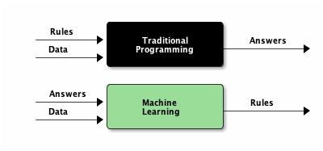
Figure 2: Traditional Programming v.s. Machine Learning
2.3. Training Phase v.s. Inference Phase
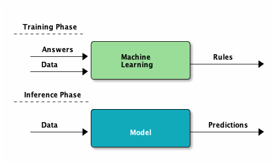
Figure 3: Training and Inference Phase of ML
3. 典型的機器學習MODEL Training
以“rock, paper, and scissors”辨識為例2:
- 將三種圖案的image讀入model中
- 於model中建立神經元(可視為function)，學習不同image的特徵
- 根據上述神經元讀取的特徵值(features)，配合該image之答案(label)，進行學習
1: model = tf.keras.models.Sequence([ 2: tf.keras.layers.Flatten(input_shape=(150, 150, 3)), 3: tf.keras.layers.Dense(512, activation='relu), 4: tf.keras.layers.Dense(3, activatio='softmax') 5: ]) 6: 7: model.compile(loss='categorical_crossentropy', optimizer='rmsprop') 8: 9: model.fit(...., epochs=100)
3.1. Process of learning
可先將512個神經元視為512個function，每個function裡有許多變數，這些變數的初始值為random assign，接下來每個function陸續讀取image的所有feature(即圖的每個pixel，這裡可以將之視為傳入該function的parameters)，然後根據function中的變數值，開始學習要如何調整function裡的變數值才能輸出這個image的正確答案(label)，每個神經元同時進行學習與變數值調校。
3.2. Example of training
輸入image為rock
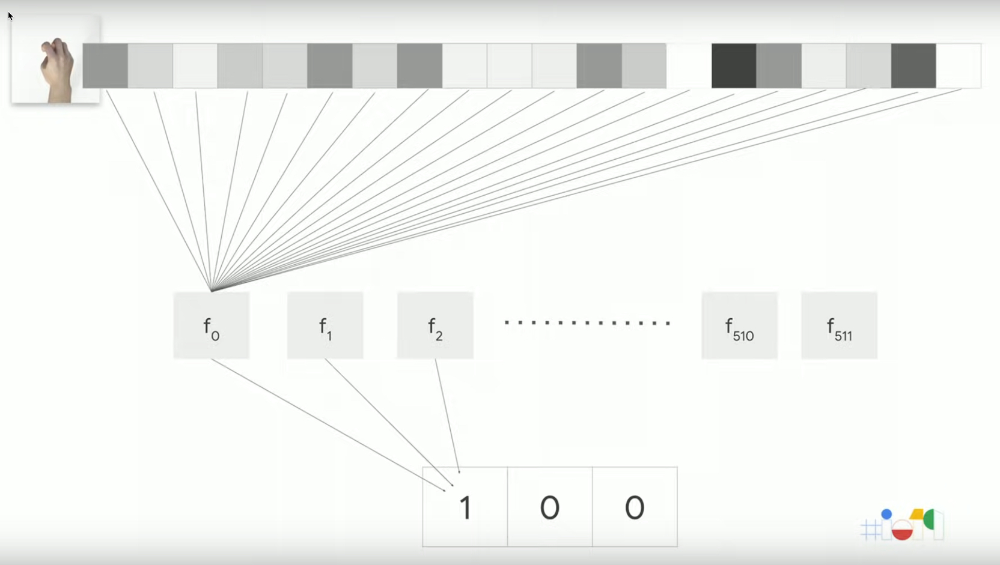
Figure 6: Stone
輸入image為paper
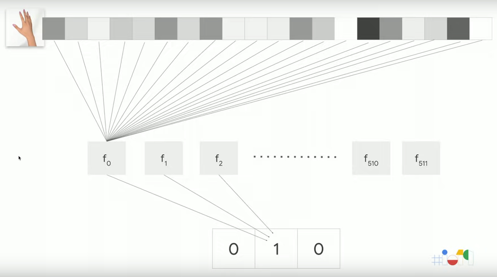
Figure 7: Paper
接下來，
3.3. Model v.s. Layer: Training step by step
Input layer
此的輸入為image，對model來說，其feature為150*150*3

Figure 8: input_shape
Hidden layer
中間層(hidden layer)有512個神經元，可視為512個function
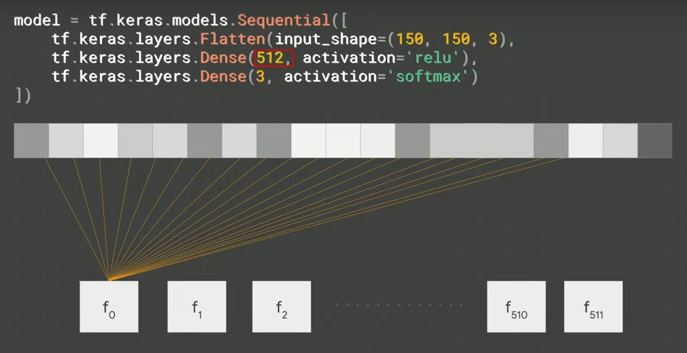
Figure 9: hidden_layer
Output layer
輸出層(output layer)則輸出三種可能的答案
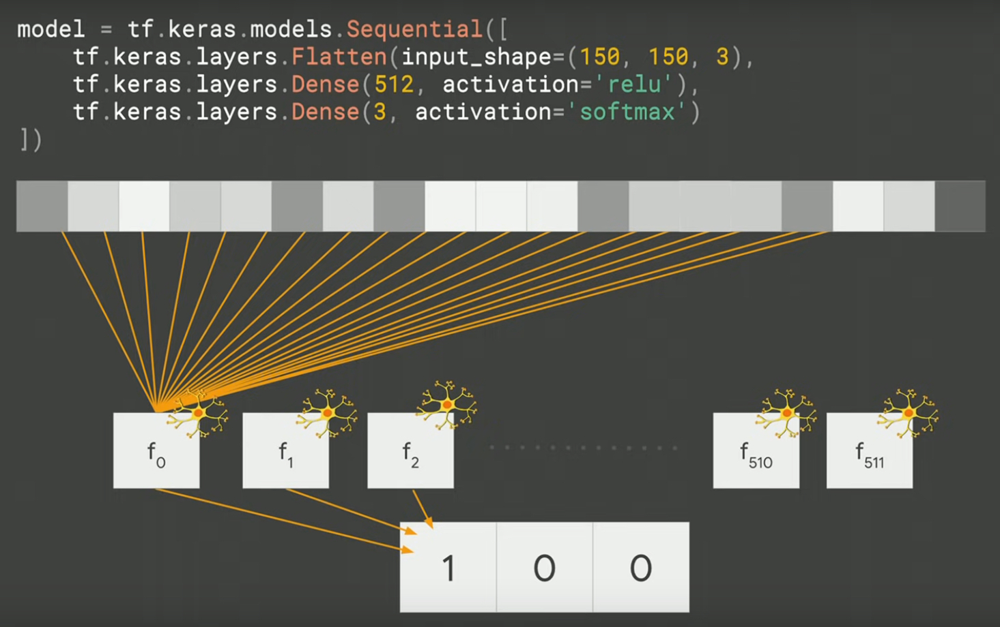
Figure 10: output_layer
3.4. compile v.s. fit
- compile: Compile與傳統程式設計概念不同，此處旨在訂定兩個model training中最重要的關鍵: loss function與optimizer。剛才提及每個function(或neuron)都對於產生答案(label)做出了貢獻，然而這個答案到底好或不好，必須要有一個評估機制，loss function的目的就在評估每一次所有neuron所產生的答案是否足夠好(以此例來看至少正確率必須高過1/3)，然後把評估結果丟給optimizer，由它來決定下一次猜測時neuron裡的parameters要如何調整。
- fit: 如此重複不斷的進行“輸入feature->猜測答案->評估答案->修正parameter->輸入features->猜測答案->評估答案->修正parameter….”，希望最終能找到各neuron中最佳的parameters值，每一次的訓練稱為一次epoch。這就是fit在做的事，也是實際訓練的動作，訓練所需時間視輸入值、model複雜程度與硬體效能而定，也許僅需數分鐘，也許要耗時數週。
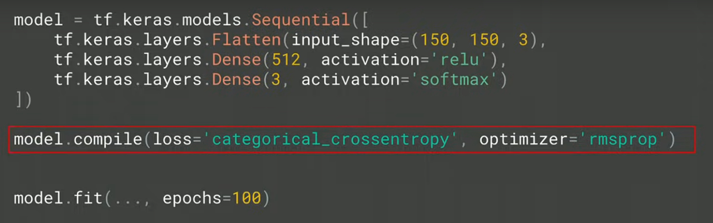
Figure 11: compile-phase
4. 機器學習如何解決問題
4.1. 使用機器學習處理問題的幾個步驟：
- 數據收集(Data Collection): 在監督式學習下還要蒐集正確的標記
- 數據處理(Data Processing): 包含「數據清理」，例如：刪除「冗餘」或「高度相關的特徵」，或補滿「遺漏值」。
- 建立測試案例(Creation of the test case): 通常包括：「訓練數據集」(training dataset)用來訓練演算法、「測試數據集」(test dataset)用來測試訓練完成的演算法、以及「驗證數據集」(validation dataset)用來進行最終測試(在不斷的訓練-測試之後)。
4.2. 現實生活中的應用
近年來的機器學習範例：
- AlphaGo: 基於深度學習所製作的「人工智慧機」，在 2016 年擊敗世界圍棋冠軍 Lee Sedol。AlphaGo 的優勢在於這個程式並不是專門開發來下圍棋的，而是運用「強化學習」與「深度學習」，透過下了數以千計次的圍棋，學習到如何下圍棋。
- 澳大利亞：2015 年舉辦一場「預測西澳大利亞租屋價錢」的比賽
- 2009 年 Netflix 推出一項總奬金 100 萬美元的競賽，用來改進預測使用者喜愛影片的正確性
- AlhpaGo Zero: 2017 年 10 月 19 日，AlphaGo 團隊在《自然》上發表文章介紹了 AlphaGo Zero，文中指出此版本不採用人類玩家的棋譜，且比之前的所有版本都要強大。透過自我對弈，AlphaGo Zero 在三天內以 100 比 0 的戰績戰勝了 AlphaGo Lee，花了 21 天達到 AlphaGo Master 的水平，用 40 天超越了所有舊版本。DeepMind 聯合創始人兼 CEO 傑米斯·哈薩比斯說，AlphaGo Zero「不再受限於人類認知」，很強大。由於專家數據「經常很貴、不可靠或是無法取得」，不藉助人類專家的數據集訓練人工智慧，對於人工智慧開發超人技能具有重大意義[4]，因為這樣的 AI 不是學習人，是透過對自我的反思和獨有的創造力直接超越人類3。
- 繼 AlphaGo 後，同一團隊(DeepMind)繼續打造出 AlphaZero，不再依賴人類棋士的知識與棋譜，只給遊戲規則。在 34 小時的訓練後（約自我訓練 2100 萬局[1]:Table S3），AlphaZero 以 60 勝 40 敗的成績打敗 AlphaGo Zero4。
5. 機器學習的類型
5.1. 監督式學習(Supervised learning)
- 目前九成以上的機器學習應用均屬此類
- 監督式學習指在訓練過程中直接告訴機器答案，也就是將資料進行標註(label)，例如，在 1000 張訓練集照片中標註「貓/狗」。
- 從給定的訓練資料集中學習出一個函式，當新的資料到來時，可以根據這個函式預測結果。
- 監督學習的訓練集要求是包括輸入和輸出， 也可以說是特徵和目標。 訓練集中的目標是由人標註的。
- 為迄今為止最常見的機器學習，泛指一群的機器學習演算法，是從一組「已標記」的「訓練數據集」(training dataset)來學習(訓練)，並導出模型。然後，以此一模型對「未標記」的類似數據進行預測分類，其運作流程如圖121所示。典型的例子為早期電子郵件的垃圾信件是讓使用者先去標記某些信為垃圾郵件，然後藉由這些被標記的郵件來推論找出其他可能的垃圾郵件；由此看來，我們以為 Gmail 很好心的提供給我們為信件加註「垃圾」、「廣告」的功能，其實是 Google 利用我們當免費勞工為他們提供信件加註標籤的工作。

Figure 12: 監督式學習流程圖
- 典型應用
- Credit/loan approval:信用評比與貸款通過
- Medical diagnosis: if a tumor is cancerous or benign(是否有 XX 癌症)
- Fraud detection: if a transaction is fraudulent 詐騙或正常交易
- 垃圾郵件(SPAM)或正常郵件
- Web page categorization 網站分類: which category it is
- 資安應用: 取得有漏洞程式碼資料集(label)，評估其他程式是否有漏洞
- Credit/loan approval:信用評比與貸款通過
- 範例：
- 分類：基於從訓練集資料觀測到的分類類別來標籤、預測新數據的類別，如上述的垃圾郵件即為典型的二元分類工作(如圖13)，類別分類工作也可以進行「多類別分類」(multi-class classification)，如典型的 MNist 手寫數字辨識，即是將手寫的 0-9 數字進行預測辨識，並給出一個 0-9 的類別標籤。
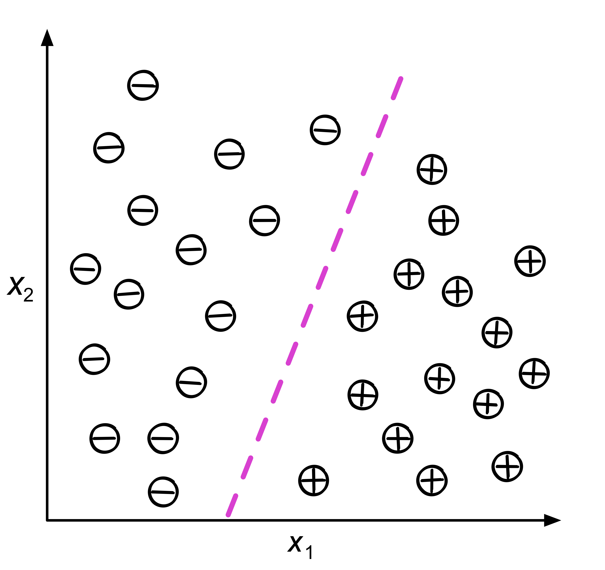
Figure 13: 典型的分類
- 線性迴歸: 利用輸入數據的「特徵」來預測出一個「值」，例如，根據房屋的地點、坪數、樓層、房間數等變數, 發掘出這些變數之間的關係，進而預測房價，如圖14。

Figure 14: 典型的迴歸
- 決策樹: 精典例子為「鳶尾花數據集」(http://archive.ics.uci.deu/ml/datasets/Iris)。
- 支援向量機: 主要用來處理分類問題，它不僅能將數據分門別類，甚至遇可以找到最大化的「分離超平面」（類似於三維以上空間中的一個平面），會最大化每個樣本點與該「超平面」的差。此外，當數據是「不可線性分離」時，支援向量機還可以透過「軟邊界」(soft margin)和「核技巧」(kernel trick)來處理。
- 分類：基於從訓練集資料觀測到的分類類別來標籤、預測新數據的類別，如上述的垃圾郵件即為典型的二元分類工作(如圖13)，類別分類工作也可以進行「多類別分類」(multi-class classification)，如典型的 MNist 手寫數字辨識，即是將手寫的 0-9 數字進行預測辨識，並給出一個 0-9 的類別標籤。
5.2. 非監督式學習(Unsupervised learning)
- 非監親式學習只有觀測值，單純給電腦大量觀測資料，然後從這些資料找出潛在規則。例如：將 10 萬張片依據電腦自己歸納的規則分為數個不同的群組。
- 在「監督式學習」中，我們事先會知道訓練集數據的正確答案(label)，並依此訓練我們的模型；在強化學習的環境中，我們會為代理人定義如何度量特定行動的奬勵；然而，在「非監督式學習」的環境中，我們面對的是未標記類別的數據或未知結構的數據。而是讓演算法導出結論。最典型的例子就是「集群」(clustering)，即，讓演算法自己根據數據的特性把它們依某種特質分類為不同子集合，這裡的子集合不一定要是有限集合，也可能是無界子集(unbounded subsets)。「受限玻爾茲曼機」以及「深度信念網路」(deep belief networks, DBN)都屬此類。
- 非監督式學習經常被運用於資料分析的前置階段，用來先將資料分群或降低維度(減少變數量)，以利後續的分析或監督式學習的進行。
- 範例：
- 集群(cluster): 是一種「探索式數據分析」(exploratory data analysis)技術，它允許我們先組織一堆資訊到一個有意義的「子集群」(clusters)中，而無需任何先驗知識。
- Cluster analysis (or clustering, data segmentation, …): Finding similarities between data according to the characteristics found in the data and grouping similar data objects into clusters
- K-means: 將數據集中的每個樣本分類到 k 個不同的子集合中，它隨機選擇 k 個點，這些點稱為「質心」(centroid)，代表這 k 個不同子集合的中心點，然後對於每個「質心」，我們選擇最接近它的一點，群組起來…..。
- 生成對抗網路(GAN)
- 資料沒有答案(如解讀古文)
- Principal Component Analysis 主成份分析
- 集群(cluster): 是一種「探索式數據分析」(exploratory data analysis)技術，它允許我們先組織一堆資訊到一個有意義的「子集群」(clusters)中，而無需任何先驗知識。
- 非監督式學習分群的原理
- Linear projection
- PCA: Principal component analysis，用來識別整個feature set中哪些特徵最為重要，且最能解釋資料實例間的可變性。
- standard PCA
- incremental PCA
- sparse PCA
- kernel PCA
- standard PCA
- SVD: Singular value decomposition，降低原來features matrix的rank，使原來的matrix可以分解成數個較小rank的matrix。
- Random projection
- PCA
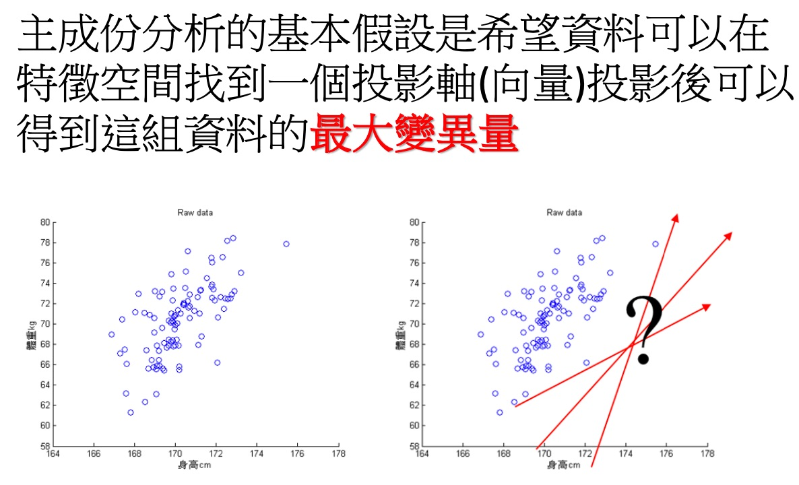
Figure 15: PCA
- PCA: Principal component analysis，用來識別整個feature set中哪些特徵最為重要，且最能解釋資料實例間的可變性。
- Nonlinear dimensionality reduction
- Isomap
- t-SNE: t-distributed stochastic neighbor embedding
- Dictionary learning
- ICA: Independent component analysis
- LDA: Latent Dirichlet allocation
- MDS: Multidimensional scaling
- LLE: Locally linear embedding
- Isomap
- Dimensionality reduction
- 找出原始資料裡最主要的方面來代替原始資料，使得在損失少部分原始資訊的基礎上，最大程度的降低原始資料的維度。
- 維度縮減讓非監督式學習能更正確地辨識patterns，並更有效率地解決大規模資料所導致的昂貴運算問題
- 降維原理
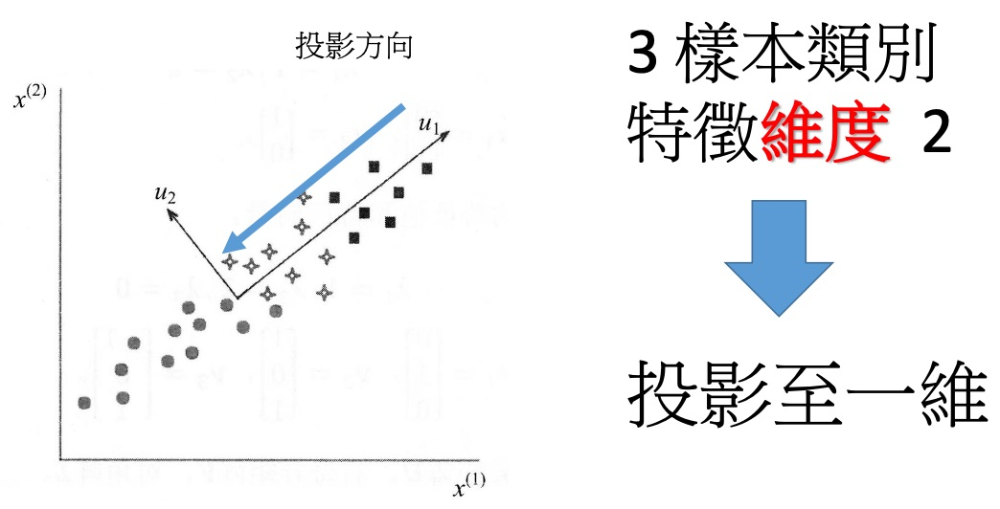
Figure 16: 基本的降維#1
- 降維的選擇
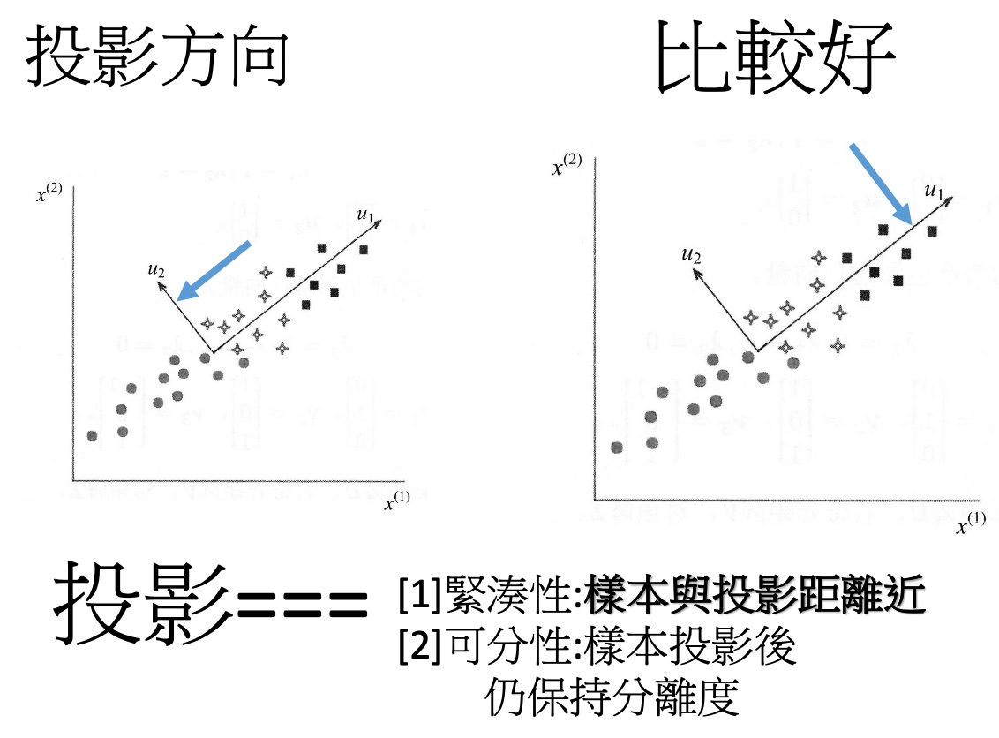
Figure 17: 基本的降維#2
- 找出原始資料裡最主要的方面來代替原始資料，使得在損失少部分原始資訊的基礎上，最大程度的降低原始資料的維度。
- Linear projection
- face recognition 做法
- 2D 圖形 轉 1 維向量
- 經由 PCA 計算，取得主要 factor，進行降維度(projection)
- 取得合理的維度，進行特徵描述
- 2D 圖形 轉 1 維向量
5.3. 強化學習(Reinforcement learning)
- 機器為了達成目標，隨著環境的變動，而逐步調整其行為，並評估每一個行動之後所到 的回饋是正向的或負向的，即，在 try-and-error 的過程中一步步從失敗中找出成功的路徑。
- 較常用於以下領域：電腦遊戲、下棋、自駕車、機器人。
- AlphaGo：先以監督式學習(以人類棋譜來訓練)訓練出早期版的 AlphaGo，接下來以增強式學習兩個最期版的 AlphaGo 對奕(40 天內對奕 3000 萬盤棋)。
- 2017 年的 AlphaZero 則放棄監督式學習(人類棋譜)，完全採取強化學習的模式，三天後摸索出自己的圍棋下法，成為有史以來棋力最強的版本。(不再以人類為師，所以才能超越人類？)
- Google 也將強化學習用於機房伺服器管理，持續偵測機房室內外用電、溫度、建立模型，由模型決定每台伺服器的運轉(全速、低速、休眠、關機)，並達到省電 40%的目標。
- 強化學習的效果之所以優於監督式學習，主要原因是：監督式學習是人示範給電腦看，電腦照著做，但如果人做的不夠好，電腦再厲害也無法超越(例如，醫師給的 X 光片在判讀上本身就出現誤解 )；而強化學習則是在做中學，進一步脫離人的指導(或人類的經驗限制)，自行發展出更好的規則。
- 強化學習其實就是訓練一個 AI 可以通過每一次的錯誤來學習，就跟我們小時候學騎腳踏車一樣，一開始學的時候會一直跌倒，然後經過幾次的失敗後，我們就可以上手也不會跌倒了1。強化學習在過去曾被長期忽視，但在 Google DeepMind 成功將其應用來玩 Atari 遊戲後，就開始受到許多關注。
- 強化學習的目標在於開發一個系統（或代理人，agent）,他會藉由與環境的互動來改進自身的效能。由於當前的環境狀態資訊通常就包含了所謂「奬勵信號」(reward signal)，強化學習的目的就是找到一個最好的 Policy(策略)，可以讓 reward 最多。所以也可以把「強化學習」視為與「監督式學習」相關聯的領域，然而在強化學習中，環境回饋不能視為真實正的事實（或是說，正確的標籤），只能將之視為：測量函數對特定行動所觀測到並回報的一個度量值。如圖18，Agent
- 最常見的應用是教機器如何「玩遊戲」，在這種情境下，我們不會對某個動作貼標籤說它是「好」或「壞」，而是根據遊戲的結果（輸或是贏）或是遊戲中的信號（得分或失分）來做為回饋。

Figure 18: 強化學習流程圖
5.4. 自監督式學習(Self-supervised learning)
這是監督式學習的特例，是一種沒有人工標註標籤的監督式學習，它們的標籤是從輸入資料自己生成的，通常是使用啟發式演算法(heuristic algorithm)。例如：自動編碼器(autoencoders)，它生成的標籤是從未經修改的輸入資料取得的，同樣的，從影片之前的影像來預測下一幅影格(frame)、從文章之前的字詞來預測下一個字詞等，都是這類應用。
Yann Lecun 在 IJCAI 2018 上的演講中提及自監督學習的特色在於能通過輸入的某一部分預測其它部分。在空間層面上包括圖像補全、圖像變換等，在時間層面上包括時序數據預測、視頻幀預測等。Yann LeCun 總結了三類學習範式，分別是強化學習、監督學習和自監督學習，相比於強化學習和監督學習，自監督學習將輸入和輸出當成完整的整體。它們的區別和聯繫在於反饋信息的逐漸增多，模型表徵複雜度、適用任務類型也大幅增加，同時任務中涉及的人類工程比重也大大減少，意味著自動化程度的增加。
在這場演講中，LeCun 認為機器學習的未來不會是監督學習，當然也不會純粹是強化學習，它應該是包含了深度模塊的自監督學習。那麼下一個問題是，自監督學習能夠產生一般的背景知識嗎？這裡重點是模型需要推斷出背景知識，它需要從真實世界收集的背景知識推理出當前它希望預測的任務。如下 LeCun 舉了一個例子，如果接收到一個自然語句，模型應該推斷出當前場景的各種背景知識。對於基於模型的經典最優控制，我們可能需要初始化一個序列來模擬世界，並通過梯度下降調整控制序列來最優化目標函數。而目前我們可以通過強化學習的方式模擬世界，這些模型不僅需要預測下一個可能的動作，同時還需要預測一系列可能的未來。
5.5. 深度學習 v.s.強化學習
深度學習：Deep Learning,是一種機器學習的技術，由於深度學習在現代機器學習中的比重和價值非常巨大，因此常常將深度學習單獨拿出來說。最初的深度學習網絡是利用神經網絡來解決特徵層分佈的一種學習過程。通常我們瞭解的 DNN（深度神經網絡），CNN（卷積神經網絡），RNN（循環神經網絡），LSTM（長短期記憶網絡）都是隸屬於深度學習的範疇。也是現代機器學習最常用的一些手段。通過這些手段，深度學習在視覺識別，語音識別，自然語言處理（NLP）等領域取得了使用傳統機器學習算法所無法取得的成就。
強化學習：8.2，又稱再勵學習或者評價學習。也是機器學習的技術之一。所謂強化學習就是智能系統從環境到行為映射的學習，以使獎勵信號（強化信號）函數值最大，由於外部給出的信息很少，強化學習系統必須依靠自身的經歷進行自我學習。通過這種學習獲取知識，改進行動方案以適應環境。強化學習最關鍵的三個因素是狀態，行為和環境獎勵。關於強化學習和深度學習的實例，最典型的莫過於谷歌的 AlphaGo 和 AlphaZero 兩位了，前者通過深度學習中的深度卷積神經網絡，在訓練了大約三千萬組人類的下棋數據，無數度電的情況下才搞出來的模型，而後者使用強化學習的方式，通過自己和自己下棋的方式搞出來的模型。而最終的實驗結果也很讓人震撼。AlphaGo 干敗了人類圍棋頂尖高手,而 AlphaZero 干敗了 AlphaGo.
5.6. Batch and Online Learning5
- Batch learning: In batch learning, the system is incapable of learning incrementally; it must be trained using all the available data.
- Online learning:
- In online learning, you train the system incrementally by feeding it data instances sequentially, either individually or in small groups called mini-batches.
- Online learning is great for systems that receive data as a continuous flow (e.g., stock prices) and need to adapt to change rapidly or autonomously.
- Online learning algorithms can also be used to train systems on huge datasets that cannot fit in one machine’s main memory (this is called out-of-core learning).
- In online learning, you train the system incrementally by feeding it data instances sequentially, either individually or in small groups called mini-batches.
5.7. Instance-Based Versus model-Based Learning5
- Instance-based learning: the system learns the examples by heart, then generalizes to new cases by using a similarity measure to compare them the the learned examples.
- 以垃圾郵件偵測為例，早期做法是由使用者將特定寄件人設定為垃圾來源，之後將同一寄件者寄出之郵件全標為垃圾；
- 而 AI 的做法則是可以找出與現有被標為垃圾郵件十分「相似」的郵件，也將之標為垃圾郵件。
- 重點在於相似性的計算
- 以垃圾郵件偵測為例，早期做法是由使用者將特定寄件人設定為垃圾來源，之後將同一寄件者寄出之郵件全標為垃圾；
- Model-based learning: Another way to generalize from a set of examples is to build a model of these examples and then use that model to make predictions.
- 例，以 linear model 來預測人圴生產總值與該國人民滿意度的關係：
- model selection: decide to select what kind of model: \[lifeSatisfaction = \theta_0 + \theta_1 \times GDP \]
- define parameter value: how do you know which vsalues (\[\theta_0, \theta_1\]) will make your model perform best?
- evaluate model performance: you can either define a utility function (or fitness function) that measures how good your model is, or you can define a cost function that measures how bad it is.
- model selection: decide to select what kind of model: \[lifeSatisfaction = \theta_0 + \theta_1 \times GDP \]
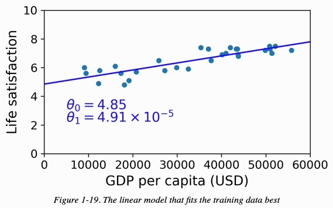
Figure 20: The linear model that fits the training data best
- CODE
1: # Download the data 2: import urllib.request 3: import os 4: datapath = os.path.join("datasets", "lifesat", "") 5: 6: def prepare_country_stats(oecd_bli, gdp_per_capita): 7: oecd_bli = oecd_bli[oecd_bli["INEQUALITY"]=="TOT"] 8: oecd_bli = oecd_bli.pivot(index="Country", columns="Indicator", values="Value") 9: gdp_per_capita.rename(columns={"2015": "GDP per capita"}, inplace=True) 10: gdp_per_capita.set_index("Country", inplace=True) 11: full_country_stats = pd.merge(left=oecd_bli, right=gdp_per_capita, 12: left_index=True, right_index=True) 13: full_country_stats.sort_values(by="GDP per capita", inplace=True) 14: remove_indices = [0, 1, 6, 8, 33, 34, 35] 15: keep_indices = list(set(range(36)) - set(remove_indices)) 16: return full_country_stats[["GDP per capita", 'Life satisfaction']].iloc[keep_indices] 17: 18: DOWNLOAD_ROOT = "https://raw.githubusercontent.com/ageron/handson-ml2/master/" 19: os.makedirs(datapath, exist_ok=True) 20: for filename in ("oecd_bli_2015.csv", "gdp_per_capita.csv"): 21: print("Downloading", filename) 22: url = DOWNLOAD_ROOT + "datasets/lifesat/" + filename 23: urllib.request.urlretrieve(url, datapath + filename) 24: 25: import matplotlib.pyplot as plt 26: import numpy as np 27: import pandas as pd 28: import sklearn.linear_model 29: 30: # Load the data 31: oecd_bli = pd.read_csv("./datasets/lifesat/oecd_bli_2015.csv", thousands=',') 32: gdp_per_capita = pd.read_csv("./datasets/lifesat/gdp_per_capita.csv",thousands=',',delimiter='\t', encoding='latin1', na_values="n/a") 33: 34: 35: # Prepare the data 36: country_stats = prepare_country_stats(oecd_bli, gdp_per_capita) 37: X = np.c_[country_stats["GDP per capita"]] 38: y = np.c_[country_stats["Life satisfaction"]] 39: 40: # Visualize the data 41: plt.clf() 42: 43: country_stats.plot(kind='scatter', x="GDP per capita", y='Life satisfaction') 44: import matplotlib as mpl 45: mpl.rc('axes', labelsize=14) 46: mpl.rc('xtick', labelsize=12) 47: mpl.rc('ytick', labelsize=12) 48: plt.plot() 49: 50: plt.savefig("images/GDP.png") 51: # Select a linear model 52: model = sklearn.linear_model.LinearRegression() 53: 54: # Train the model 55: model.fit(X, y) 56: 57: # Make a prediction for Cyprus 58: X_new = [[22587]] # Cyprus's GDP per capita 59: print(model.predict(X_new)) # outputs [[ 5.96242338]] 60:
Downloading oecd_bli_2015.csv Downloading gdp_per_capita.csv [[5.96242338]]
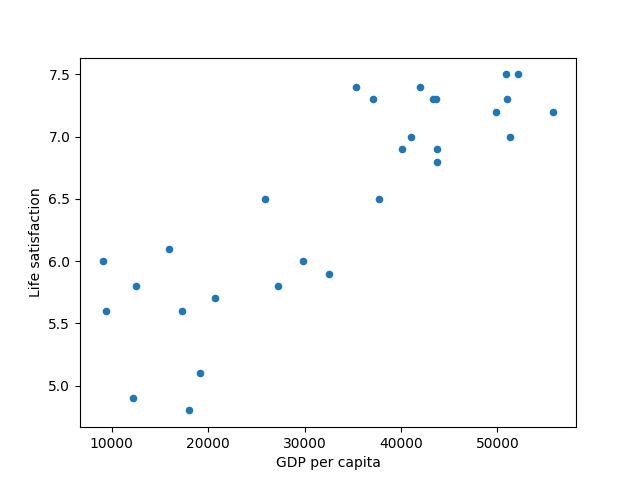
Figure 21: The linear model that fits the training data best
- 例，以 linear model 來預測人圴生產總值與該國人民滿意度的關係：
6. Data Representations
How can we represent data (images, text, user preferences, etc.) in a way that computers can understand? -> Organize information into a vector2.
- A vector is a 1-dimensional array of numbers. It has both a magnitude(length) and a direction.
A feature vector is a vector whose entries represent the “features” of some object.
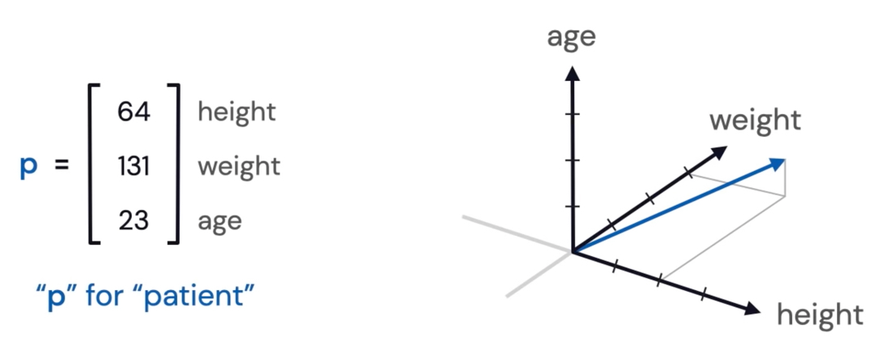
Figure 22: Feature Vector
6.1. Images
In black and white images, black and white pixels correspond to 0s and 1s. Grayscale pixels are numbers between 0 and 255. Both assemble into a 1-dimensional array of numbers.
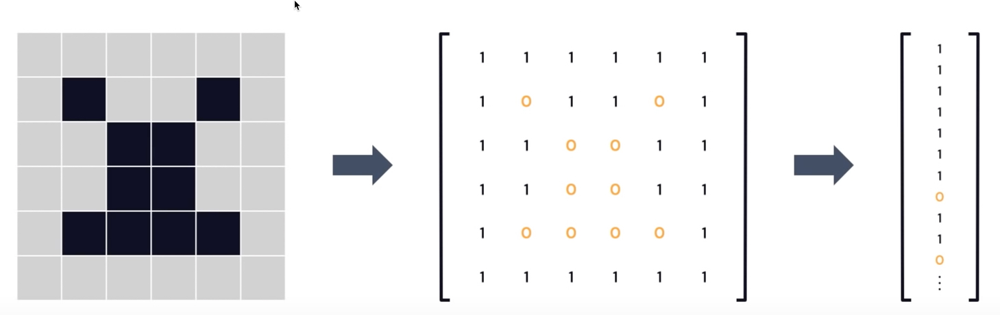
Figure 23: Image data representations
6.2. Words and Documents
Given a collection of doucments (e.g. Wikipedia articles), assign to every word a vector whose \(i^{th}\) entry is the number of times the word appears in the \(i^{th}\) document.
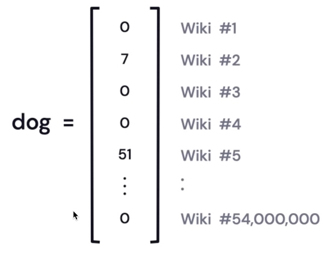
These vectors can assemble into a large matrix, useful for latent semantic analysis.
6.3. Yes/No or Ratings
Given users and items (e.g. movies), vectors can indicate if a user has interacted with the item (1=yes, 0=no) or the user’s ratings, say a number between 0 and 5.
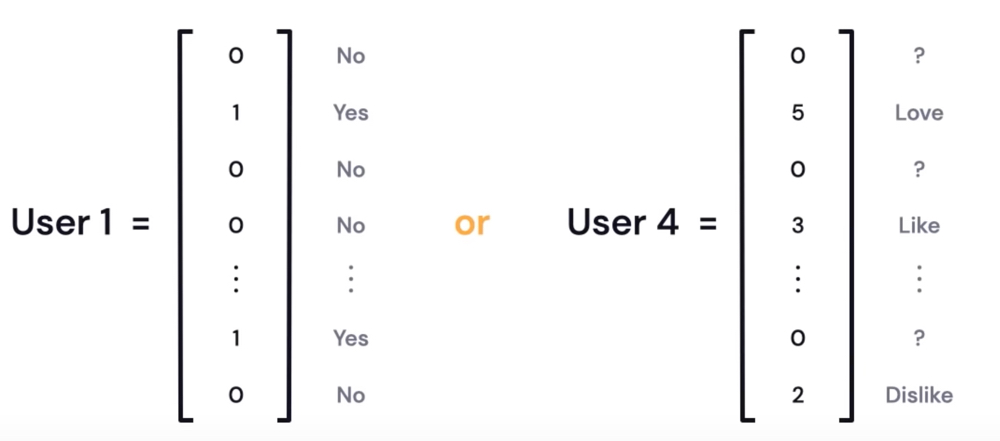
Figure 24: Y/N or Ratings
6.4. One-Hot Encodings
Assign to each word a vector with one 1 and 0s elsewhere. This is called a one-hot encoding (or a “standard basis vector”). For example, suppose our language only has four words:
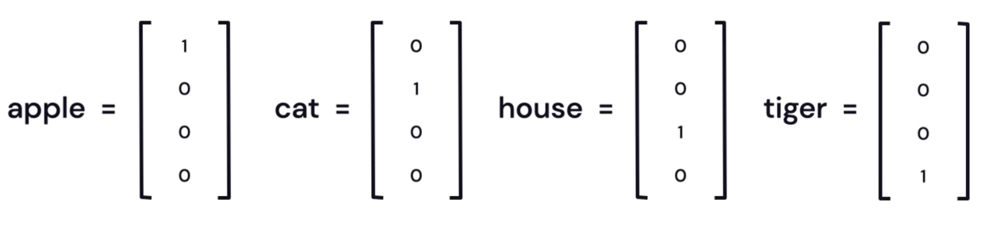
Figure 25: words one-hot encoding
7. 機器學習的主要挑戰5
7.1. Insufficient quantity of training data
Even for very simple problems you typically need thousands of examples, and for complex problems such as image or speech recognition you may need millions of examples. The idea that data matters more than algorithms for complex problems was further popularized by Peter norvig et al. in a paper titled “The Unreasonable Effectiveness of Data”, published in 2009.
7.2. Nonrepresentative training data
- In order to generalize well, it is crucial that your training data be representative of the new cases you want to generalize to.
- Perhaps the most famous example of sampling bias happened during the US presidential election in 1936, which pitted Landon against Roosevelt: the Literary Digest conducted a very large poll, sending mail to about 10 million people. The flaw was in the Literary Digest’s sampling method:
- First, to obtain the addresses to send the polls to, the Literary Digest use telephone directories, lists of magazine subscribers, club membership lists, and the like.
- Second, less than 25% of the people who were polled answered.
- First, to obtain the addresses to send the polls to, the Literary Digest use telephone directories, lists of magazine subscribers, club membership lists, and the like.
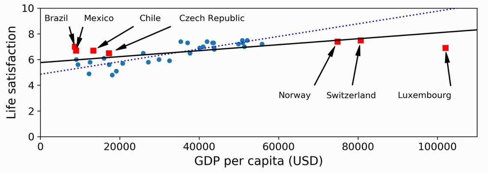
Figure 26: 加入更多資料會使 modle 更具代表性
7.3. Poor-quality data
Obviously, if your training data is full of errors, outliers, and noise (e.g., due to poor-quality measurements), it will make it harder for the system to detect the underlying patterns, so your system is less likely to perform well.
7.4. Irrelevant features
7.5. Overfitting the training data
- Overfitting happens when the model is too complex relative to the amount and noisiness of the training data. Here are possible solutions:
- Simplify the model by selecting one with fewer parameters.
- Gather more training data.
- Reduce the noise in the training data (e.g., fix data errors and remove outliers).
- Simplify the model by selecting one with fewer parameters.
- Constraining a model to make it simpler and reduce the risk of overfitting is called regularization.
- The amount of regularization to apply during learning can be controlled by a hyperparameter. A hyperparameter is a parameter of a learning algorithm (not of the model).
7.6. Underfitting the training data
Underfitting occurs when your model is too simple to learn the underlying structure of the data.
8. Machine Learning 的基本類型
8.1. Nonlinear Models 非線性模型
- 常用的 Nonlinear Models
- Decision Tree
- example: https://en.akinator.com
- 要定義很多 rule 才能把 tree 建起來
- example: https://en.akinator.com
- Ensemble Models
- 選取 model 的考量
- Bias v.s. Variance
- Error from bias
- Error from variance
- Error observed
- underfitting v.s. overfitting
overfitting: 完全符合 training data, 但 testing data 效果很差
- Bias v.s. Variance
- Bagging
- XGBoost
- CNN
- CNN in Keras
9. Classfication
兩步驟
9.1. Model construction: describing a set of predetermined classes
- Each tuple/sample is assumed to belong to a predefined class, as determined by the class label attribute
- The set of tuples used for model construction is training set
- The model is represented as classfication urles, decision trees, or mathematical formulae.
9.2. Model usage: for classifying future or unknown objects
- Estimate accuracy of the model
- The Known label of test sample is compared with the classified result from the model
- Accuracy rate is the percentage of test set samples that are conrrectly classified by the model
- Test set is independent of training set (otherwise overfitting)
- The Known label of test sample is compared with the classified result from the model
- If the test set is used to select models, it is called validation (set) set.
10. 學習資源
10.1. Machine Learning [台大李宏毅]
- Lecture 0
- Lecture 1
- Lecture 2
- Lecture 3
- Lecture 4
- Lecture 5
- Lecture 6
- Lecture 7
- Lecture 8
- Explainable ML
- TODO Attack ML Models
- Lecture 9
- Lecture 10
- ML Lecture 10: Convolutional Neural Network
- ML Lecture 11: Why Deep?
- ML Lecture 12: Semi-supervised
- ML Lecture 13: Unsupervised Learning - Linear Methods
- ML Lecture 14: Unsupervised Learning - Word Embedding
- ML Lecture 15: Unsupervised Learning - Neighbor Embedding
- Meta Learning – Metric-based (1/3)
- ML Lecture 16: Unsupervised Learning - Auto-encoder
- ML Lecture 17: Unsupervised Learning - Deep Generative Model (Part I)
- ML Lecture 18: Unsupervised Learning - Deep Generative Model (Part II)
- More about Auto-encoder (1/4)
- ML Lecture 19: Transfer Learning
- Life Long Learning (1/7)
- Sequence-to-sequence Learning
- Meta Learning – MAML (1/9)
- ML Lecture 20: Support Vector Machine (SVM)
- ML Lecture 21-1: Recurrent Neural Network (Part I)
- ML Lecture 21-2: Recurrent Neural Network (Part II)
- Unsupervised Syntactic Parsing (ft. 莊永松同學)
- ML Lecture 22: Ensemble
- ML Lecture 23-1: Deep Reinforcement Learning
- ML Lecture 23-2: Policy Gradient (Supplementary Explanation)
- ML Lecture 23-3: Reinforcement Learning (including Q-learning)
- Deep Reinforcement Learning, 2018
- Network Compression (1/6)
- GAN (Quick Review)
- Generative Adversarial Network (GAN), 2018
- Transformer
- ELMO, BERT, GPT
- Flow-based Generative Model
- 貝葉斯推斷的運作原理
- ML Lecture 10: Convolutional Neural Network
10.2. Digital Speech Processing
11. code references
- Visualizing intermediate activation in Convolutional Neural Networks with Keras: 查看 training 中 image 的成像